企业级 AI 培训：AI 赋能办公提效 · 创建岗位智能体 · 专家经验萃取 · Vibe Coding
基于 WorkBuddy 平台。上午掌握核心用法与高频办公场景，下午用真实工作任务通关。学员带走可复用的技能卡和作品。
按行业、岗位与场景的课程落地方案：AI 赋能办公提效、创建岗位智能体、专家经验萃取、Vibe Coding、管理岗位 AI 教练辅导。已交付金融、建筑工程、消费电子、智能制造等行业。
不罗列大纲，只看四层价值：认知对齐、上手会用、场景落地、持续复训——每一层都带着真实工作练。
核心定位：让管理层与团队对齐 AI 预期——能做什么、边界在哪、从哪开始。
价值板块：统一语言、明确路径，适合全员导入或新阶段启动。
核心定位：WorkBuddy 办公提效培训：高频办公场景上手，人人产出岗位工作流。
价值板块：文档、数据、纪要等高频场景当天通关；带走可复用技能卡与作品。
核心定位：按主题深入——创建岗位智能体、专家经验萃取、Vibe Coding，带着真实任务做出成果。
价值板块：多部门场景探索到 AI 工作流闭环；重复工作交给智能体；专家经验沉淀为知识资产。
核心定位：课程结束不是终点——Buddy App 复训模式 + 结业报告 + 技能资产回流。
价值板块：回到岗位继续练，效果可验收、资产可复用，团队 AI 能力持续生长。
全员高频办公场景：文档、数据、纪要，人人上手。
一线业务岗：把重复工作交给智能体。
把专家经验变成团队可复用的知识资产。
业务岗：零代码做出小工具应用。
以下案例均为真实交付，所有培训均在 WorkBuddy 教学平台上开展。企业客户按行业与规模呈现。
背景：一家头部城市商业银行希望把 AI 用进业务一线：从销售冠军的经验沉淀，到全员办公提效。
做法：三场递进式系列内训——销冠智能体助手搭建、销冠经验 AI 知识资产化、AI+办公实操提效（100 人规模）。
成果：学员现场完成可用智能体与知识资产，形成「个人能力 → 组织资产」路径。
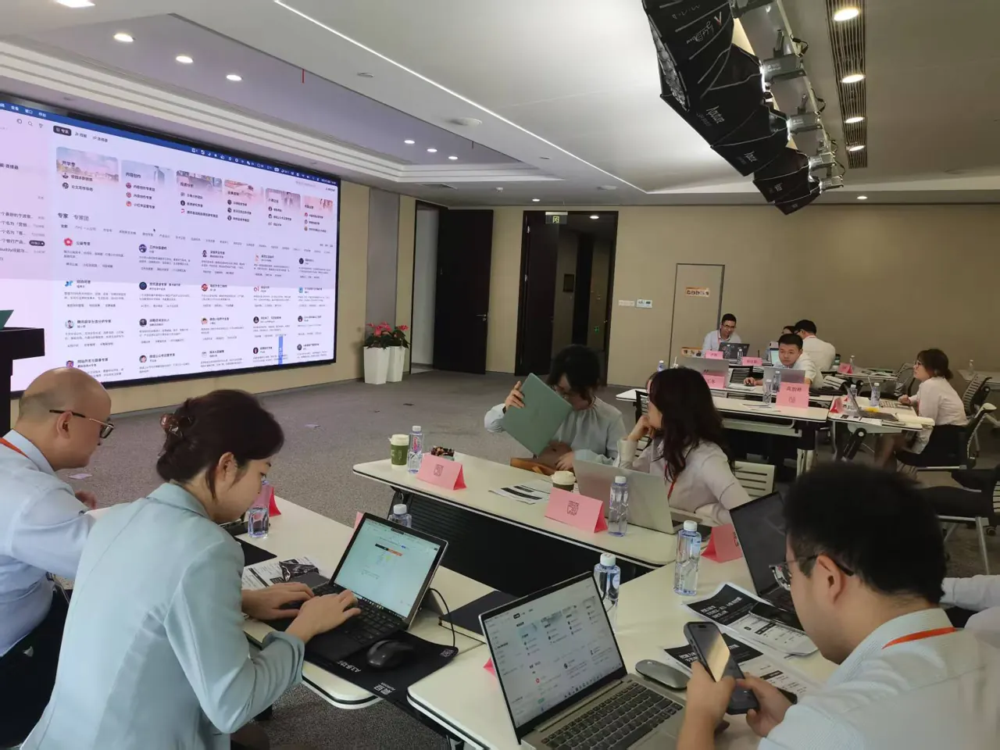
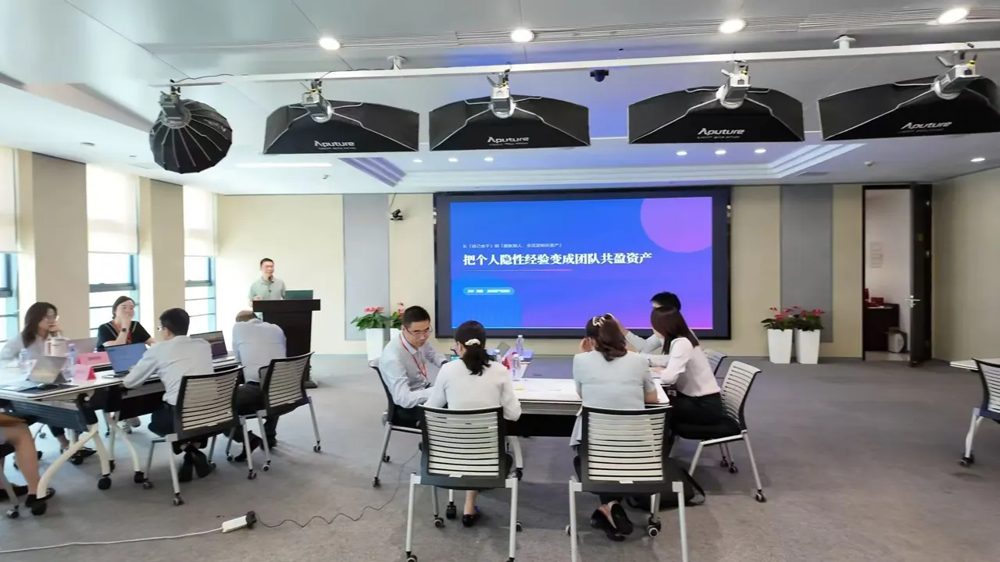
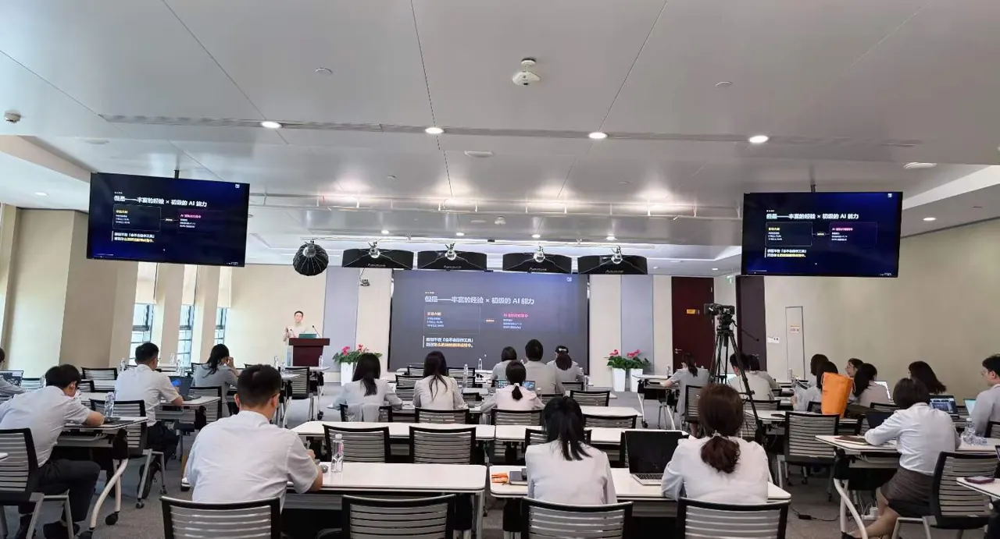
背景：一家建筑央企集团希望一线团队把 AI 用进日常与项目工作。
做法：60 人一天工作坊，分组带练，用工程行业真实场景（方案编写、资料整理、项目沟通）搭建智能体。
成果：各组带真实业务场景完成搭建并通过验收；其后追加一线 AI 办公培训。
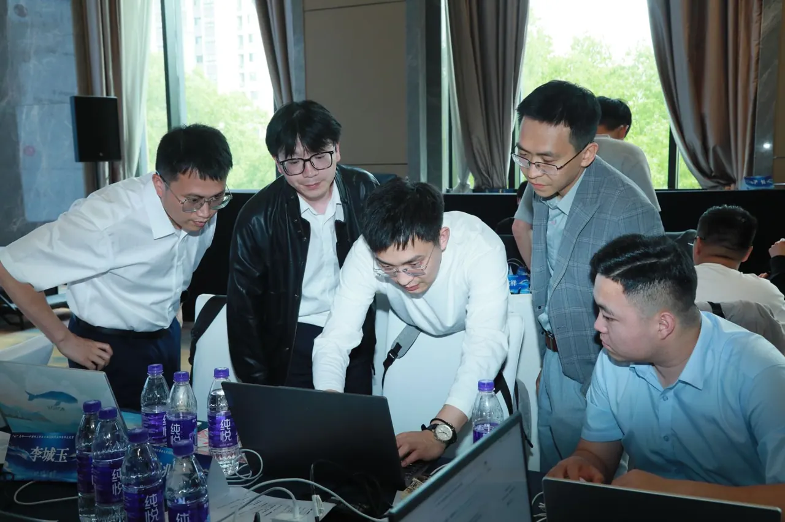
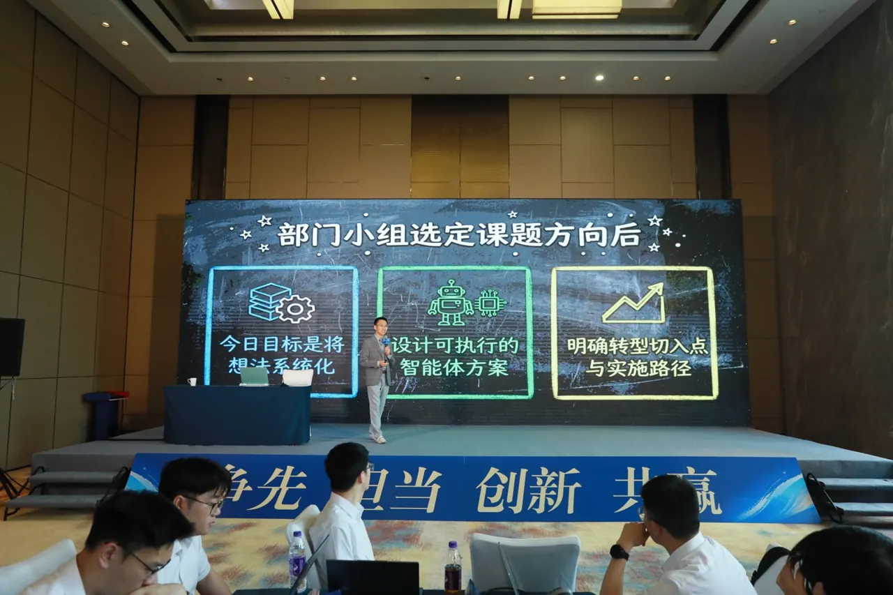
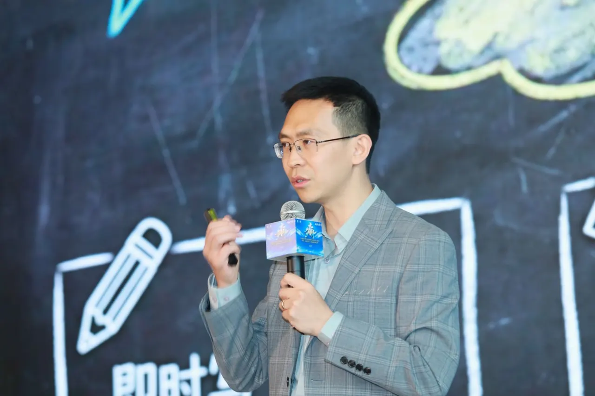
背景：一家钢构集团央企希望多个部门都能把 AI 用进业务流程，而不是停在概念了解。
做法：70 人工作坊，带领多个部门完成「从场景探索到 AI 工作流搭建」的完整闭环并落地验证。
成果：多个部门形成自己的 AI 工作流，从「听人讲」变成「自己用」。
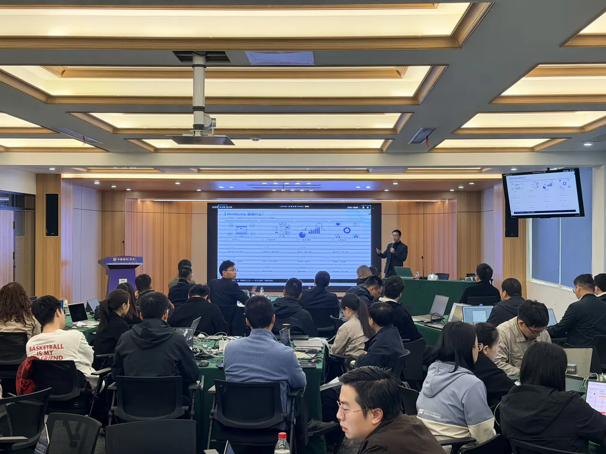
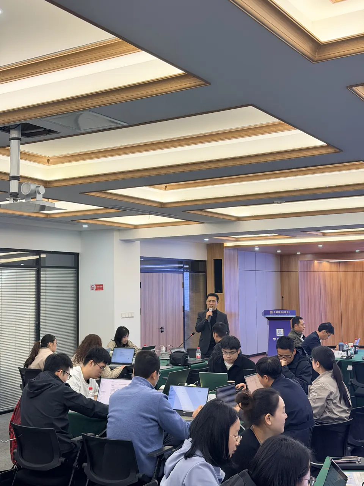
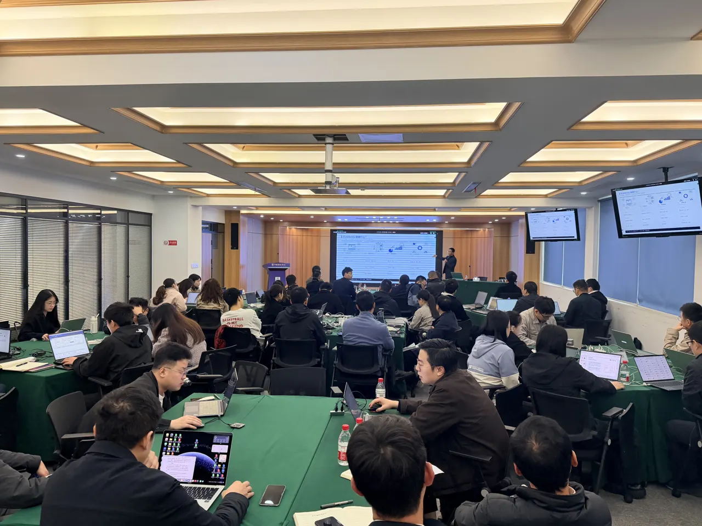
背景：一家制造企业希望一线岗位把 WorkBuddy 用起来，用智能体承接日常重复工作。
做法：30 人实战训练营，围绕本岗位真实场景现场搭建岗位智能体，教练全程辅导。
成果：学员当场搭出本岗位的智能体，训练营结束即可投入日常使用。
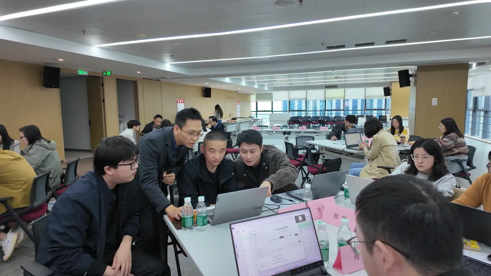
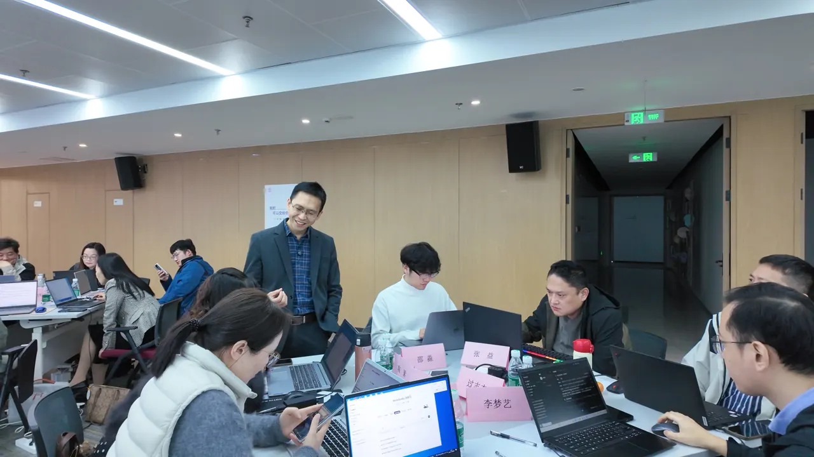
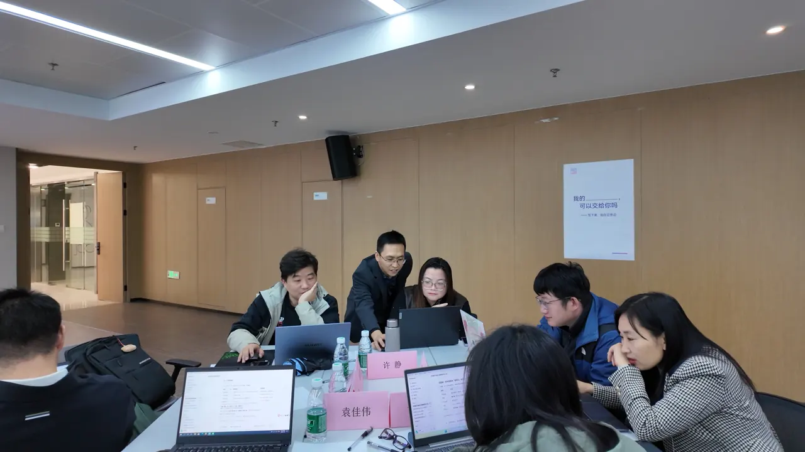
背景：团队希望系统提升日常办公效率。
做法：两场 AI+办公专题内训，覆盖文档撰写、数据分析、会议纪要等高频场景，现场任务通关。
成果：学员当天完成本岗位场景的实操任务。
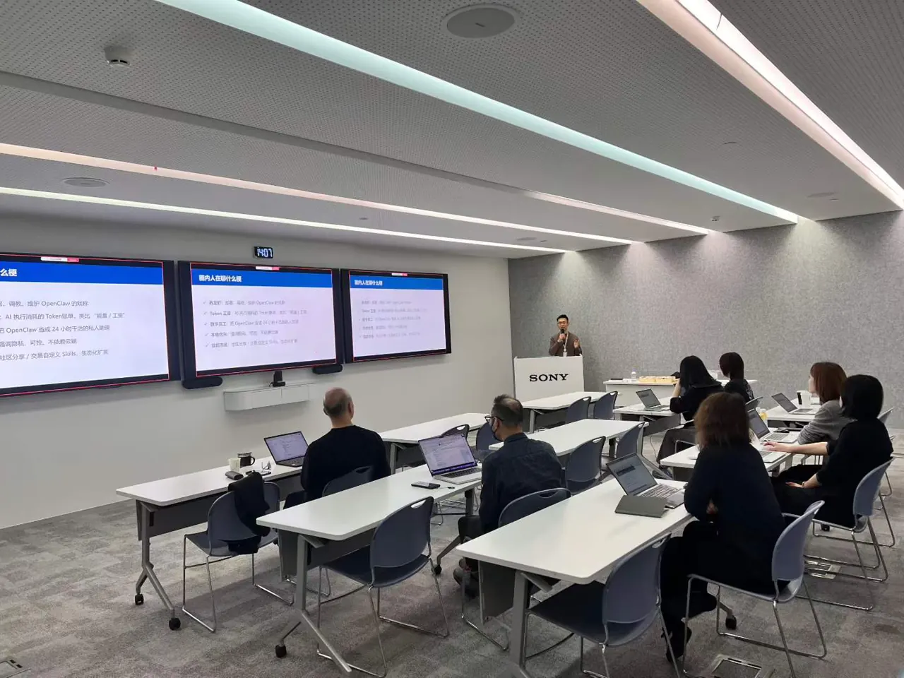
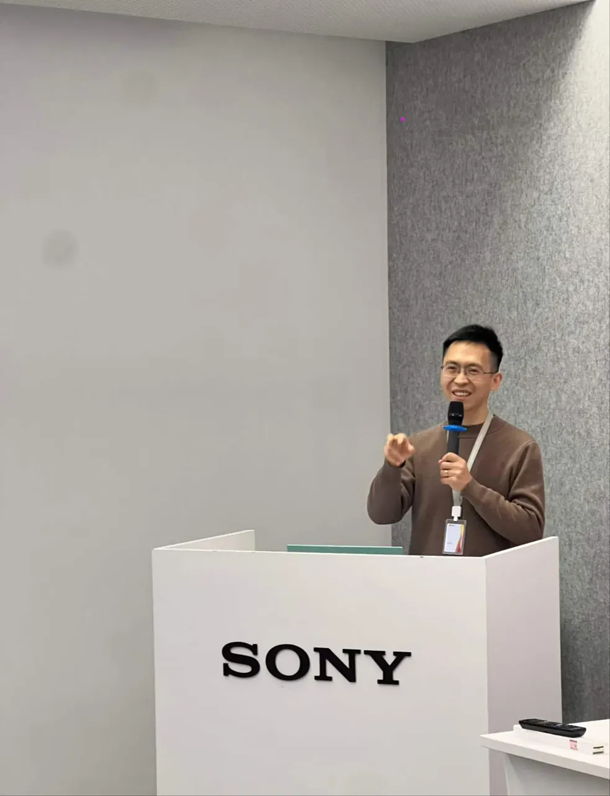
背景：一支知名乐队希望团队会用 AI 辅助创作、宣发与日常协作。
做法：120 分钟线上带练课程设计与全套课件交付，带练素材取自乐队真实工作流——巡演信息、宣发物料、差旅报销等。
成果：课程与带练场景全部按真实业务定制，学员对照日常工作即可上手。
半天。明确培训对象、场景与目标。
问卷 + 访谈，摸清学员真实工作与起点。
5–7 天，按行业场景定制，不套通用模板。
带练式交付；结业报告 + 课后复训跟进。
按授课主题、人数与定制内容报价：从一场 1 天精品课程或半天课程即可启动。提交培训需求，专家团队半天内回复方案与报价。
按岗位与场景选：全员办公提效选「AI 赋能办公提效」；一线业务岗选「创建岗位智能体」；资深专家多的团队选「专家经验萃取」；技术/产品岗选「Vibe Coding」。拿不准的，提交需求由专家团队给出建议。
可以。课程按岗位场景设计、任务卡分档难度，零基础学员当天即可完成第一个可用成果。
培训在 WorkBuddy 平台进行，课前我们协助开通训练账号并发送准备清单，学员 10 分钟即可完成。
学员带真实工作进课堂、任务卡验收过关、结业报告呈现成果，课后复训跟进，回到岗位继续用。
最快 7 天；含课前调研与定制，常规 1–2 周。
带练式课程建议 20–60 人；已交付过 100 人、500 人以上规模的大型场次。
支持。线上带练课程已有真实交付案例（见案例合集 · 文化行业）。
可以，本页企业案例附培训现场照片；部分场次附客户官方公众号报道链接可溯源。